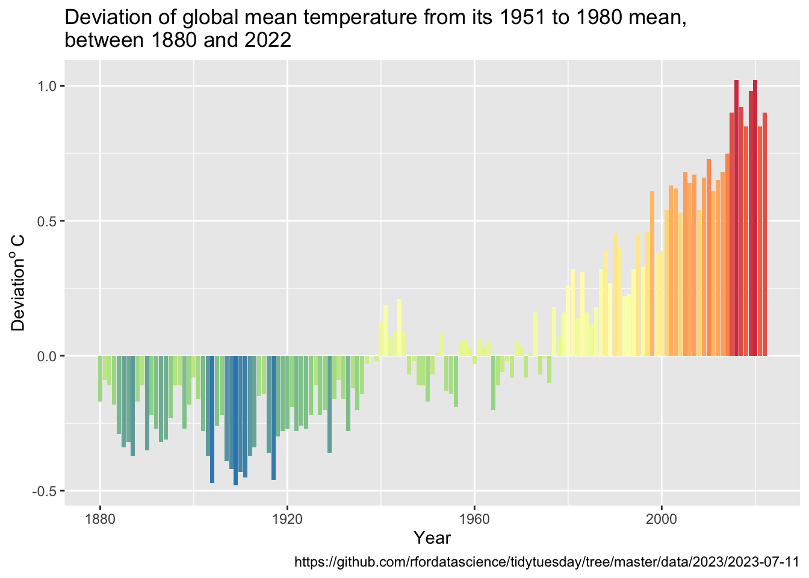
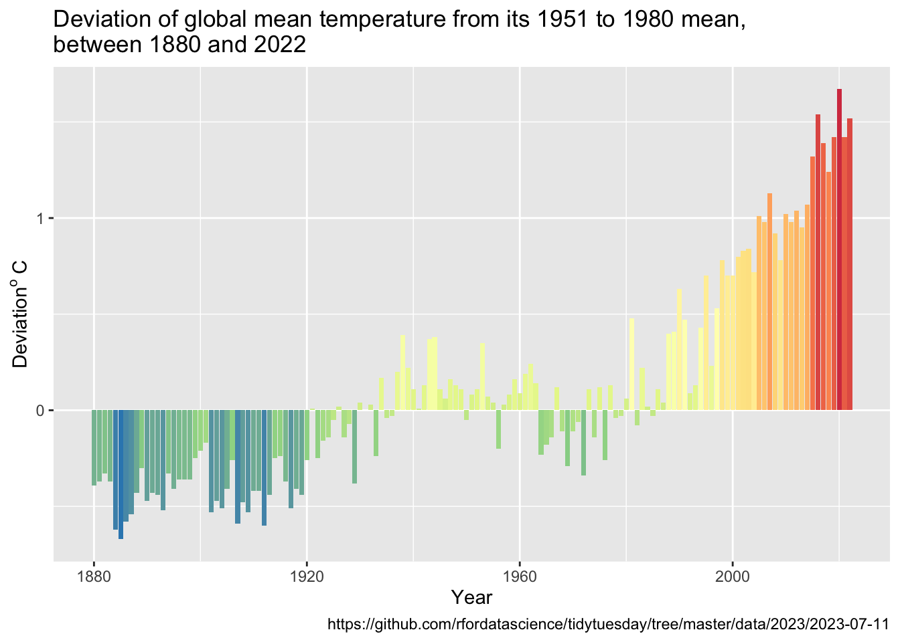

TidyTuesday is a weekly social data project. All are welcome to participate! Please remember to share the code used to generate your results! TidyTuesday is organized by the R4DS Online Learning Community. Join our Slack for free online help with R and other data-related topics, or to participate in a data-related book club! It’s about practicining data analysis techniques rather than drawing conclusions as to causation.
Loading packages and getting the data
Using tidytuesdayr to read data from https://github.com/rfordatascience/tidytuesday/tree/master/data/2023/2023-07-11 and tidyverse for analysis.
library(tidytuesdayR)library(tidyverse)
── Attaching core tidyverse packages ──────────────────────── tidyverse 2.0.0 ──
✔ dplyr 1.1.2 ✔ readr 2.1.4
✔ forcats 1.0.0 ✔ stringr 1.5.0
✔ ggplot2 3.4.2 ✔ tibble 3.2.1
✔ lubridate 1.9.2 ✔ tidyr 1.3.0
✔ purrr 1.0.1
── Conflicts ────────────────────────────────────────── tidyverse_conflicts() ──
✖ dplyr::filter() masks stats::filter()
✖ dplyr::lag() masks stats::lag()
ℹ Use the conflicted package (<http://conflicted.r-lib.org/>) to force all conflicts to become errors
tuesdata <- tidytuesdayR::tt_load('2023-07-11')
--- Compiling #TidyTuesday Information for 2023-07-11 ----
--- There are 4 files available ---
--- Starting Download ---
Downloading file 1 of 4: `global_temps.csv`
Downloading file 2 of 4: `nh_temps.csv`
Downloading file 3 of 4: `sh_temps.csv`
Downloading file 4 of 4: `zonann_temps.csv`
Year Jan Feb Mar
Min. :1880 Min. :-0.81000 Min. :-0.6300 Min. :-0.63000
1st Qu.:1916 1st Qu.:-0.24000 1st Qu.:-0.2400 1st Qu.:-0.22250
Median :1952 Median :-0.01500 Median :-0.0400 Median : 0.01500
Mean :1952 Mean : 0.06333 Mean : 0.0709 Mean : 0.08889
3rd Qu.:1987 3rd Qu.: 0.31000 3rd Qu.: 0.3825 3rd Qu.: 0.32250
Max. :2023 Max. : 1.18000 Max. : 1.3700 Max. : 1.36000
Apr May Jun Jul
Min. :-0.58000 Min. :-0.55000 Min. :-0.52000 Min. :-0.51000
1st Qu.:-0.25000 1st Qu.:-0.24000 1st Qu.:-0.25000 1st Qu.:-0.19000
Median :-0.02500 Median :-0.04000 Median :-0.05000 Median :-0.03000
Mean : 0.06368 Mean : 0.05292 Mean : 0.03315 Mean : 0.05587
3rd Qu.: 0.28250 3rd Qu.: 0.27250 3rd Qu.: 0.24000 3rd Qu.: 0.23500
Max. : 1.13000 Max. : 1.02000 Max. : 0.93000 Max. : 0.94000
NA's :1 NA's :1
Aug Sep Oct Nov
Min. :-0.55000 Min. :-0.58000 Min. :-0.5800 Min. :-0.55000
1st Qu.:-0.22000 1st Qu.:-0.19000 1st Qu.:-0.2000 1st Qu.:-0.17500
Median :-0.05000 Median :-0.06000 Median : 0.0100 Median : 0.02000
Mean : 0.05441 Mean : 0.05818 Mean : 0.0842 Mean : 0.07776
3rd Qu.: 0.23500 3rd Qu.: 0.24000 3rd Qu.: 0.2450 3rd Qu.: 0.23000
Max. : 1.02000 Max. : 0.99000 Max. : 1.0900 Max. : 1.11000
NA's :1 NA's :1 NA's :1 NA's :1
Dec J-D D-N DJF
Min. :-0.82000 Min. :-0.48000 Min. :-0.49000 Min. :-0.67000
1st Qu.:-0.22000 1st Qu.:-0.20000 1st Qu.:-0.21000 1st Qu.:-0.22500
Median :-0.04000 Median :-0.06000 Median :-0.05500 Median :-0.02000
Mean : 0.05182 Mean : 0.06021 Mean : 0.06077 Mean : 0.06357
3rd Qu.: 0.30500 3rd Qu.: 0.26500 3rd Qu.: 0.27750 3rd Qu.: 0.31500
Max. : 1.16000 Max. : 1.02000 Max. : 1.04000 Max. : 1.24000
NA's :1 NA's :1 NA's :2 NA's :1
MAM JJA SON
Min. :-0.58000 Min. :-0.50000 Min. :-0.52000
1st Qu.:-0.25250 1st Qu.:-0.21500 1st Qu.:-0.19000
Median :-0.02500 Median :-0.05000 Median :-0.01000
Mean : 0.06854 Mean : 0.04769 Mean : 0.07287
3rd Qu.: 0.31000 3rd Qu.: 0.23500 3rd Qu.: 0.24000
Max. : 1.14000 Max. : 0.94000 Max. : 1.00000
NA's :1 NA's :1
summary(nhtemps)
Year Jan Feb Mar
Min. :1880 Min. :-1.52000 Min. :-0.9800 Min. :-0.8000
1st Qu.:1916 1st Qu.:-0.29750 1st Qu.:-0.3500 1st Qu.:-0.2500
Median :1952 Median : 0.04000 Median :-0.0050 Median : 0.0050
Mean :1952 Mean : 0.08576 Mean : 0.1010 Mean : 0.1283
3rd Qu.:1987 3rd Qu.: 0.39500 3rd Qu.: 0.4775 3rd Qu.: 0.3975
Max. :2023 Max. : 1.59000 Max. : 1.9400 Max. : 1.9100
Apr May Jun Jul
Min. :-0.65000 Min. :-0.73000 Min. :-0.52000 Min. :-0.59000
1st Qu.:-0.26000 1st Qu.:-0.21500 1st Qu.:-0.19000 1st Qu.:-0.18000
Median :-0.01000 Median : 0.00500 Median :-0.04000 Median :-0.02000
Mean : 0.09757 Mean : 0.09056 Mean : 0.07951 Mean : 0.07811
3rd Qu.: 0.31250 3rd Qu.: 0.25000 3rd Qu.: 0.22000 3rd Qu.: 0.21000
Max. : 1.48000 Max. : 1.28000 Max. : 1.21000 Max. : 1.10000
NA's :1 NA's :1
Aug Sep Oct Nov
Min. :-0.77000 Min. :-0.80000 Min. :-0.840 Min. :-0.8300
1st Qu.:-0.21000 1st Qu.:-0.21000 1st Qu.:-0.185 1st Qu.:-0.2200
Median :-0.04000 Median :-0.02000 Median : 0.050 Median : 0.0500
Mean : 0.06385 Mean : 0.08014 Mean : 0.131 Mean : 0.1152
3rd Qu.: 0.20500 3rd Qu.: 0.26000 3rd Qu.: 0.305 3rd Qu.: 0.3300
Max. : 1.17000 Max. : 1.22000 Max. : 1.320 Max. : 1.6100
NA's :1 NA's :1 NA's :1 NA's :1
Dec J-D D-N DJF
Min. :-1.14000 Min. :-0.57000 Min. :-0.58000 Min. :-1.05000
1st Qu.:-0.29000 1st Qu.:-0.22000 1st Qu.:-0.20000 1st Qu.:-0.27000
Median :-0.02000 Median : 0.00000 Median : 0.01000 Median :-0.01000
Mean : 0.05692 Mean : 0.08888 Mean : 0.09042 Mean : 0.08378
3rd Qu.: 0.36000 3rd Qu.: 0.25000 3rd Qu.: 0.25500 3rd Qu.: 0.39500
Max. : 1.53000 Max. : 1.35000 Max. : 1.37000 Max. : 1.67000
NA's :1 NA's :1 NA's :2 NA's :1
MAM JJA SON
Min. :-0.7100 Min. :-0.54000 Min. :-0.7200
1st Qu.:-0.2400 1st Qu.:-0.20000 1st Qu.:-0.2150
Median :-0.0150 Median :-0.03000 Median : 0.0300
Mean : 0.1056 Mean : 0.07371 Mean : 0.1087
3rd Qu.: 0.3000 3rd Qu.: 0.20500 3rd Qu.: 0.2700
Max. : 1.5000 Max. : 1.12000 Max. : 1.3400
NA's :1 NA's :1
summary(shtemps)
Year Jan Feb Mar
Min. :1880 Min. :-0.63000 Min. :-0.5900 Min. :-0.5900
1st Qu.:1916 1st Qu.:-0.19250 1st Qu.:-0.1825 1st Qu.:-0.1825
Median :1952 Median :-0.03500 Median :-0.0350 Median :-0.0400
Mean :1952 Mean : 0.03875 Mean : 0.0384 Mean : 0.0475
3rd Qu.:1987 3rd Qu.: 0.27250 3rd Qu.: 0.2300 3rd Qu.: 0.3300
Max. :2023 Max. : 0.80000 Max. : 0.7900 Max. : 0.8100
Apr May Jun Jul
Min. :-0.63000 Min. :-0.60000 Min. :-0.67000 Min. :-0.47000
1st Qu.:-0.23250 1st Qu.:-0.28000 1st Qu.:-0.30500 1st Qu.:-0.23000
Median :-0.05500 Median :-0.10000 Median :-0.07000 Median :-0.05000
Mean : 0.02931 Mean : 0.01632 Mean :-0.01084 Mean : 0.03573
3rd Qu.: 0.31250 3rd Qu.: 0.26000 3rd Qu.: 0.28500 3rd Qu.: 0.27000
Max. : 0.98000 Max. : 0.91000 Max. : 0.81000 Max. : 0.86000
NA's :1 NA's :1
Aug Sep Oct Nov
Min. :-0.46000 Min. :-0.50000 Min. :-0.51000 Min. :-0.53000
1st Qu.:-0.22000 1st Qu.:-0.24000 1st Qu.:-0.23000 1st Qu.:-0.18500
Median :-0.07000 Median :-0.06000 Median :-0.04000 Median :-0.04000
Mean : 0.04594 Mean : 0.03748 Mean : 0.03937 Mean : 0.04161
3rd Qu.: 0.31500 3rd Qu.: 0.30000 3rd Qu.: 0.27500 3rd Qu.: 0.27500
Max. : 0.92000 Max. : 0.91000 Max. : 0.91000 Max. : 0.80000
NA's :1 NA's :1 NA's :1 NA's :1
Dec J-D D-N DJF
Min. :-0.55000 Min. :-0.48000 Min. :-0.50000 Min. :-0.58000
1st Qu.:-0.17000 1st Qu.:-0.21000 1st Qu.:-0.21000 1st Qu.:-0.18000
Median :-0.04000 Median :-0.06000 Median :-0.06000 Median :-0.04000
Mean : 0.04713 Mean : 0.03245 Mean : 0.03218 Mean : 0.04154
3rd Qu.: 0.29000 3rd Qu.: 0.28000 3rd Qu.: 0.28000 3rd Qu.: 0.27500
Max. : 0.80000 Max. : 0.75000 Max. : 0.75000 Max. : 0.80000
NA's :1 NA's :1 NA's :2 NA's :1
MAM JJA SON
Min. :-0.60000 Min. :-0.53000 Min. :-0.47000
1st Qu.:-0.23250 1st Qu.:-0.24500 1st Qu.:-0.21000
Median :-0.06000 Median :-0.06000 Median :-0.03000
Mean : 0.03069 Mean : 0.02441 Mean : 0.03965
3rd Qu.: 0.29250 3rd Qu.: 0.28000 3rd Qu.: 0.30000
Max. : 0.85000 Max. : 0.77000 Max. : 0.74000
NA's :1 NA's :1
summary(zonanntemps)
Year Glob NHem SHem
Min. :1880 Min. :-0.48000 Min. :-0.57000 Min. :-0.48000
1st Qu.:1916 1st Qu.:-0.20000 1st Qu.:-0.22000 1st Qu.:-0.21000
Median :1951 Median :-0.06000 Median : 0.00000 Median :-0.06000
Mean :1951 Mean : 0.06021 Mean : 0.08888 Mean : 0.03245
3rd Qu.:1986 3rd Qu.: 0.26500 3rd Qu.: 0.25000 3rd Qu.: 0.28000
Max. :2022 Max. : 1.02000 Max. : 1.35000 Max. : 0.75000
24N-90N 24S-24N 90S-24S 64N-90N
Min. :-0.670 Min. :-0.63000 Min. :-0.480000 Min. :-1.7700
1st Qu.:-0.295 1st Qu.:-0.20000 1st Qu.:-0.240000 1st Qu.:-0.3750
Median : 0.020 Median :-0.01000 Median :-0.080000 Median : 0.0900
Mean : 0.109 Mean : 0.07042 Mean :-0.002518 Mean : 0.2502
3rd Qu.: 0.360 3rd Qu.: 0.29500 3rd Qu.: 0.255000 3rd Qu.: 0.7650
Max. : 1.670 Max. : 1.01000 Max. : 0.710000 Max. : 3.2400
44N-64N 24N-44N EQU-24N 24S-EQU
Min. :-0.7900 Min. :-0.63000 Min. :-0.67000 Min. :-0.59000
1st Qu.:-0.2950 1st Qu.:-0.24000 1st Qu.:-0.20500 1st Qu.:-0.17500
Median :-0.0200 Median :-0.07000 Median : 0.01000 Median :-0.01000
Mean : 0.1306 Mean : 0.03643 Mean : 0.06238 Mean : 0.07818
3rd Qu.: 0.4150 3rd Qu.: 0.15500 3rd Qu.: 0.28000 3rd Qu.: 0.31000
Max. : 1.8200 Max. : 1.27000 Max. : 0.97000 Max. : 1.07000
44S-24S 64S-44S 90S-64S
Min. :-0.44000 Min. :-0.54000 Min. :-2.60000
1st Qu.:-0.22000 1st Qu.:-0.26000 1st Qu.:-0.53500
Median :-0.06000 Median :-0.08000 Median : 0.04000
Mean : 0.04315 Mean :-0.05657 Mean :-0.08266
3rd Qu.: 0.29000 3rd Qu.: 0.19000 3rd Qu.: 0.44000
Max. : 0.80000 Max. : 0.44000 Max. : 1.22000
It looks like global, nh and sh are monthly and seasonal averages for temperatures relative to a given reference temperature throughtout the world , the northern hemisphere and southern hemisphere respectively whilst zonann temps look like annual averages of relative temperatures for the above areas and for different zones of latitude (equatorial, 0-24o North/South, 24-44o North/South, 44-64o North/South and , 64-90o North/South).
Let’s start by plotting changes in global temps.
y.expression <-expression(Deviation ^o~C)zonanntemps |>select(Year, Glob) |>ggplot(mapping =aes(Year, Glob)) +geom_col(aes(fill = Glob), show.legend =FALSE) +scale_fill_distiller(palette ="Spectral") +labs(title ="Deviation of global mean temperature from its 1951 to 1980 mean,\nbetween 1880 and 2022 ",caption ="https://github.com/rfordatascience/tidytuesday/tree/master/data/2023/2023-07-11",x ="Year",y = y.expression)

And the same plot for the part of the world where I live shows a greater increase in relative temperatures than the global average:
gst <- zonanntemps |>select(Year, hi_north =`24N-90N`)y.expression <-expression(Deviation ^o~C)ggplot(gst, mapping =aes(Year, hi_north)) +geom_col(aes(fill = hi_north), show.legend =FALSE) +scale_fill_distiller(palette ="Spectral") +labs(title ="Deviation of global mean temperature from its 1951 to 1980 mean,\nbetween 1880 and 2022 ",caption ="https://github.com/rfordatascience/tidytuesday/tree/master/data/2023/2023-07-11",x ="Year",y = y.expression)

How about average summer temperatures in the northern hemisphere